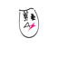
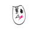

In this project I will implement and deploy diffusion models for image generation.
I used the given sample code to produce images in different inference steps with seed 777. I use the same seed in the whole part A.
I used the equation below here to add noise to campanile(given picture). Results below \[ x_t = \sqrt{\bar{\alpha}_t} x_0 + \sqrt{1 - \bar{\alpha}_t} \epsilon \quad \text{where} \quad \epsilon \sim \mathcal{N}(0, 1) \]
Here we're trying to denoise using gaussian filter blur
use the pretrained diffusion model to denoise the image
tried to get much better result by denoising in steps to get a clear image. \[ x_{t'} = \frac{\sqrt{\bar{\alpha}_{t'} \beta_t}}{1 - \bar{\alpha}_t} x_0 + \frac{\sqrt{\alpha_t}(1 - \bar{\alpha}_{t'})}{1 - \bar{\alpha}_t} x_t + v_\sigma \]
Where:
alphas_cumprod, as explained above.did the same thing as in 1.4 but with random noise, results below
computed both conditional and unconditional noise estimate, used this \[ \epsilon = \epsilon_u + \gamma (\epsilon_c - \epsilon_u) \] to get better results:
take an image, add noise to it and then denoise it to get a bit different image:).
let's start with custom, original first, and then epochs
 

second doodle
in this part we use a mask to apply a process to specific location of the image.


Use a prompt to translate an image. The next one is rocket prompt on campanile
This part the main idea is making different optical models. The first one is an image that looks like one thing when shown correctly, and shows a complete different thing when flipped. To do this, we denoise an image with two prompts(one upside down) at every step to get noise est., and then flip the flipped denoised image back and add it to the first one. To make more sense, here's the equation: \[\epsilon_1 = \text{UNet}(x_t, t, p_1) \] \[\epsilon_2 = \text{flip}(\text{UNet}(\text{flip}(x_t), t, p_2)) \] \[ \epsilon = (\epsilon_1 + \epsilon_2) / 2 \] The first visual illusion is an oil painting of old man x an oil painting of people around campfire
the second one is pen x rocket, which, I initally thought was a good mix. After a few runs, I realized it is not a good choice.

the third one is a man and a dog mix:
1.10 Hybrid images of my assignment is an illusion with distance, the first one is supposed to be a lithograph of waterfall to a lithograph of a skull, done like this: \[ \epsilon_1 = \text{UNet}(x_t, t, p_1) \] \[ \epsilon_2 = \text{UNet}(x_t, t, p_2) \] \[ \epsilon = f_\text{lowpass}(\epsilon_1) + f_\text{highpass}(\epsilon_2) \] Below are three of my tries on prompts: "waterfall" + "skull", "pen" + "skull", "amalfi cost" + "campfire"
in this part we implement, UNet, use it to train a denoiser, and then try to add time and class condition. Some info on UNet below:


This is what uncond UNet looks like. First, we implement noise algorithm though. Here's what the process looks like with different sigma values:
Then we train our uncond UNet on sigma=0.5, and here are the results after the first and fifth(last) epoch:
My training loss curve below:
I tried to use my trained model on different sigma values, and this is what I got:
Here I added my time conditioning to UNet, here's the diagram for more understanding


It was implemented so that specific digit could be generated. For this implementation, I added additional blocks and new value passed around - c(was given).